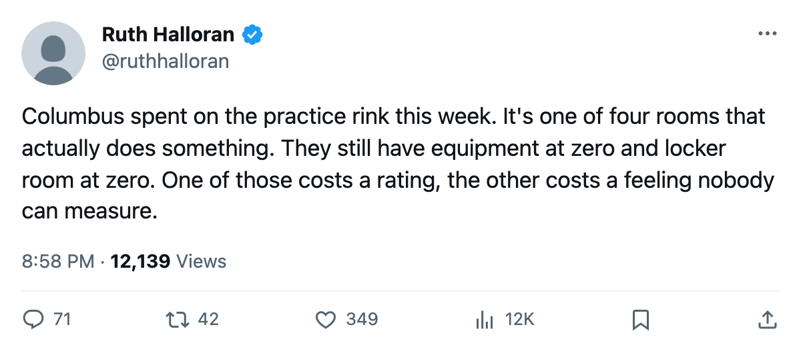
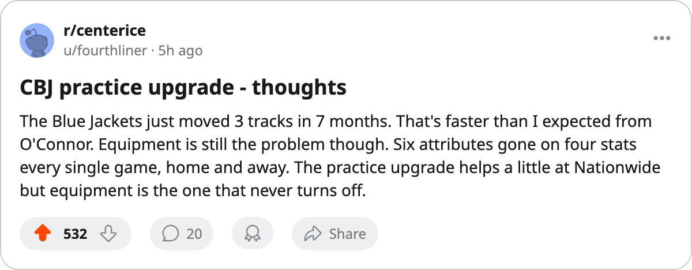

CHI
CHIColumbus Bought 2 Attributes Back at Home: The Practice Rink Went Up, and the Practice Rink Actually Works
The 5th live-track upgrade in 4 weeks, and the 1st at CBJ since May
 Ruth HalloranBusiness of hockey · The Building
Ruth HalloranBusiness of hockey · The Building
Columbus raised its practice rink from level 1 to level 2 between December 24 and December 29. The modifier moved from minus 4 to minus 2. Every man on the  Columbus Blue Jackets roster now loses 2 fewer attributes at home than he did five days ago.
Columbus Blue Jackets roster now loses 2 fewer attributes at home than he did five days ago.
Small, in the way of these things. In a league where 4 of 10 facility tracks are switched off entirely and 2 more carry numbers nothing in the pipeline reads, practice is one of only 4 tracks that change what happens between the pipes. It moves all attributes at home. Level 1 costs 4. Level 2 costs 2. The upgrade bought Columbus back half of what their rink was taking from them.
The Columbus Blue Jackets live sum, which adds the 4 tracks that move a rating, went from minus 15 to minus 13. They leave the bottom 4 in the league and join a group of 4 clubs at minus 13. Their on-the-ice modifier sits at -2.61, tied with  Detroit Red Wings and
Detroit Red Wings and  Los Angeles Kings for 7th-worst.
Los Angeles Kings for 7th-worst.
The Central's buildings, side by side
This is the 5th recorded move on a live track since December 1. The other 4 were workout at  New Jersey Devils, workout at
New Jersey Devils, workout at  Montreal Canadiens, practice at Detroit Red Wings, and travel at
Montreal Canadiens, practice at Detroit Red Wings, and travel at  Toronto Maple Leafs. Two other upgrades in that window went to scouting rooms (
Toronto Maple Leafs. Two other upgrades in that window went to scouting rooms ( Vancouver Canucks and
Vancouver Canucks and  Florida Panthers), which carry a number but feed only trade evaluations that nobody outside a club can see.
Florida Panthers), which carry a number but feed only trade evaluations that nobody outside a club can see.
The Central division as of today:
| club | practice | modifier | live sum | on the ice | home | pts | per point |
|---|---|---|---|---|---|---|---|
| STL | 0 | -6 | -16 | -2.53 | 9-5 | 51 | $1.37M |
| NSH | 3 | -1 | -10 | -1.82 | 15-1 | 50 | $1.02M |
| CBJ | 2 | -2 | -13 | -2.61 | 10-7 | 42 | $1.48M |
| DET | 5 | +1 | -13 | -2.61 | 13-7 | 37 | $1.71M |
| CHI | 1 | -4 | -17 | -2.70 | 4-15 | 27 | $1.81M |
 Nashville Predators has the best practice room in the division and the best home record in the league. Detroit Red Wings has the only rink above level 4 anywhere, reading plus 1.
Nashville Predators has the best practice room in the division and the best home record in the league. Detroit Red Wings has the only rink above level 4 anywhere, reading plus 1.  St. Louis Blues has the worst practice rink possible at level 0, minus 6 to all attributes at home, and they are 9-5 inside it anyway.
St. Louis Blues has the worst practice rink possible at level 0, minus 6 to all attributes at home, and they are 9-5 inside it anyway.
What Columbus still has at zero
The practice upgrade does not touch equipment, which is at 0. That track moves agility, acceleration, balance, and shot accuracy, at all times, home and away. Level 0 costs minus 6 on those 4 attributes. Eight clubs carry equipment at 0. Columbus is one. Their payroll is $62.03M, 8th in the league. They are paying $1.48M per point for 42 points, 8th-best in the league.
The other Columbus track that still hurts is the locker room, at 0 with a modifier of minus 10, the worst possible level for that track. It is also one of the 2 unread rooms: the file carries the number, nothing in this pipeline reads it, so it cannot cost anything anyone can measure. Columbus would be wise not to spend there.
Brent O'Connor has now moved 3 tracks on his club: workout and travel in the May wave, and practice this week. The two upgrades in May landed on tracks that do something. This one does too. The 2 tracks Columbus has left below level 2 on live terms are equipment (0) and travel (2). Travel is near par. Equipment is not.
The Columbus Blue Jackets club sits 3rd in the Central at 42 points, riding a W4 streak, 10-7 at home. The practice rink upgrade will not show up in that 10-7, which was banked before the change. It will show up in whatever comes next, if the track does what the file says it does.
The room nobody priced
The league files no cost for an upgrade. The record shows the track moved and the dates it moved between. What Columbus paid for the practice rink, and what they will pay to move equipment off zero, are not figures anyone outside the building can see. The 4 dead tracks (coaching, medical, marketing, legal) presumably cost something to upgrade and return nothing. The 2 unread tracks (locker room, scouting) cost something and return a number no one outside a club reads. Columbus has moved 3 live tracks and 0 dead ones. Whether the rink upgrade justifies what it cost, the record cannot say.

